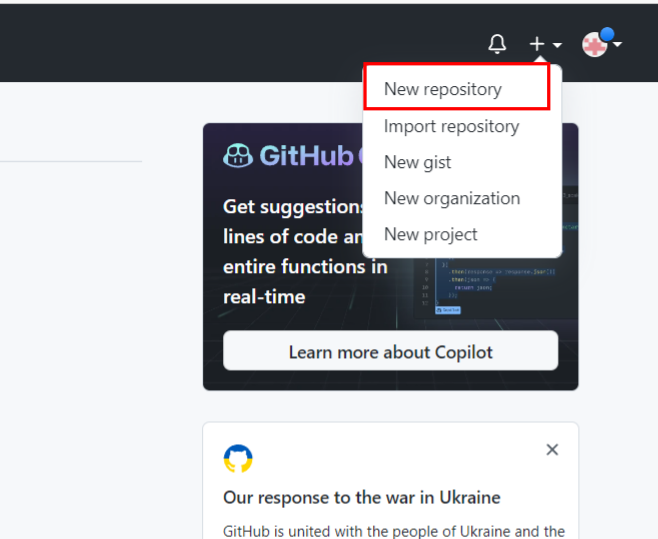

博客搭建—Hexo(一)
博客搭建
一. 初始Hexo博客
1. 新建github仓库


2. 创建Blog文件
在创建的文件夹 Blog 下，鼠标右键打开 Git Bush Here，输入 npm 命令安装 Hexo：
1 | npm install -g hexo-cli |
安装完成后，输入 hexo init 命令初始化博客：
1 | hexo init |
再接着执行命令 hexo g 进行静态部署
1 | hexo g |
这时网页已经部署完成，接着输入命令 hexo s 即可：
1 | hexo s |
此时浏览器输入 http://localhost:4000 就可以打开新部署的网页了
二. 将 Hexo 部署到 GitHub
1. 配置_config.yml
回到文件夹 Blog 下,用编辑器打开文件 _config.yml ,找到 deploy 配置项:
1 | deploy: |
2. 安装部署插件
1 | npm install hexo-deployer-git --save |
然后分别输入以下三条命令：
1 | hexo clean #清除缓存文件 db.json 和已生成的静态文件 public |
完成以后，打开浏览器，输入 https://xxx.github.io 就可以打开你的网页了
注意：若出现ssl相关错误，设置如下：
1 | git config --global http.sslVerify false |
三. 主题配置
1. Butterfly主题
1 | npm i hexo-theme-butterfly |
2. 应用Butterfly主题
回到文件夹 Blog 下,用编辑器打开文件 _config.yml
1 | theme: butterfly |
3. 安装依赖插件
如果你沒有 pug 以及 stylus 的渲染器，請下載安裝：
1 | npm install hexo-renderer-pug hexo-renderer-stylus --save |
4. 升级建议
本博客所有文章除特别声明外，均采用 CC BY-NC-SA 4.0 许可协议。转载请注明来自 K-Blog！